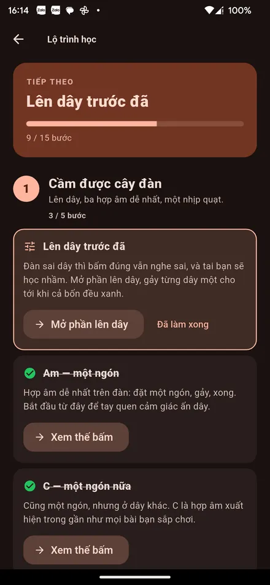
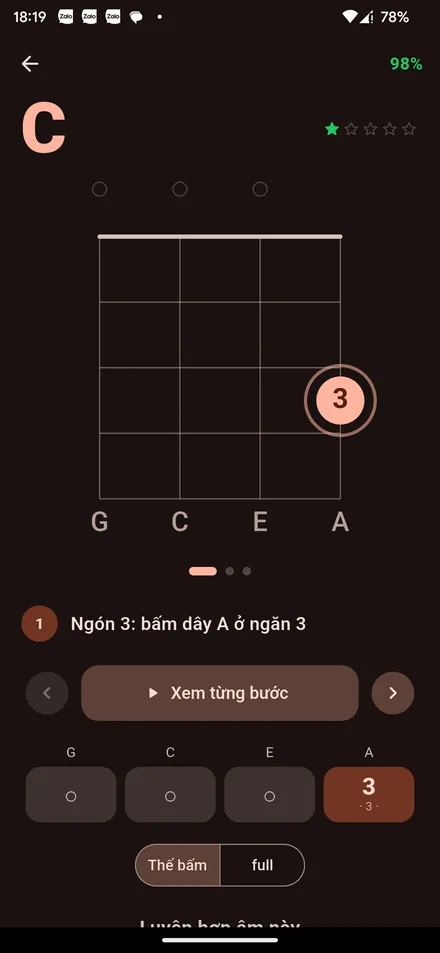
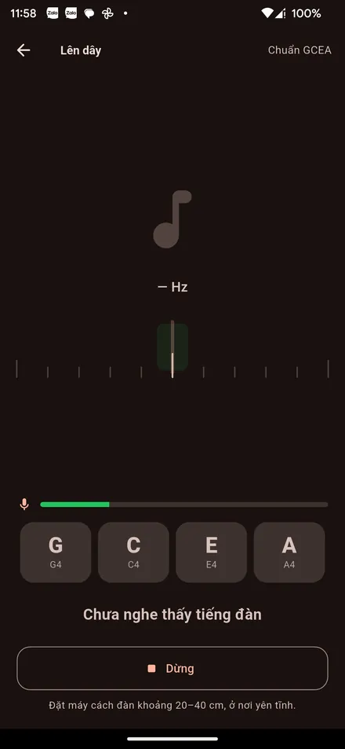
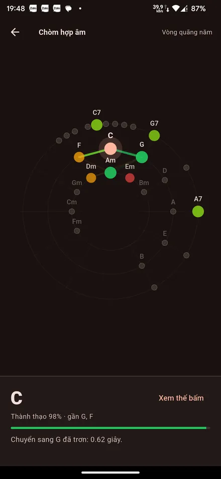
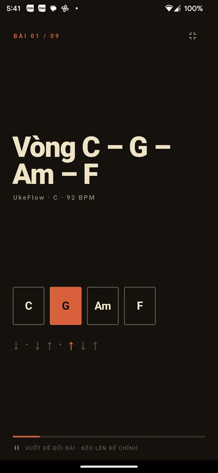
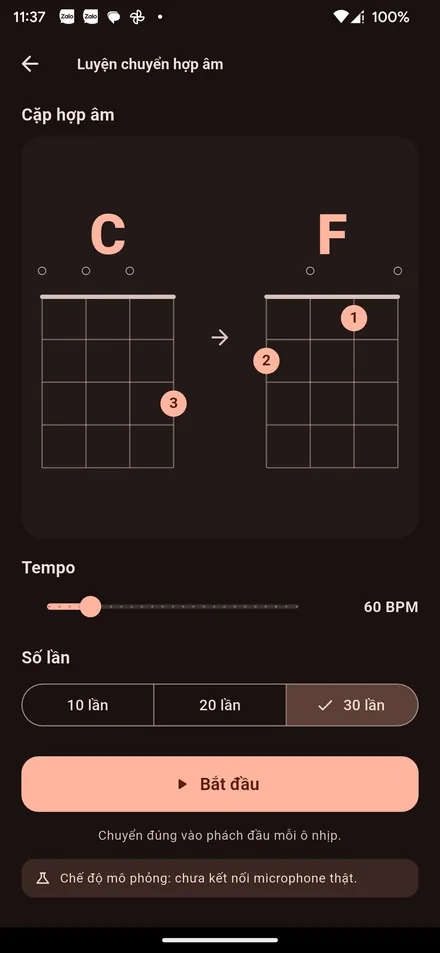
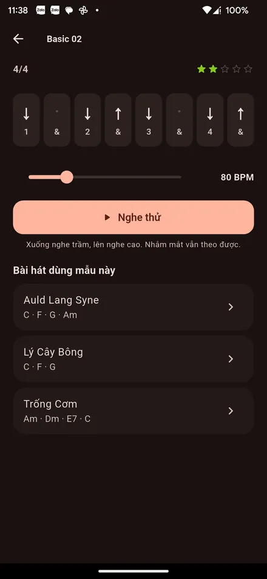
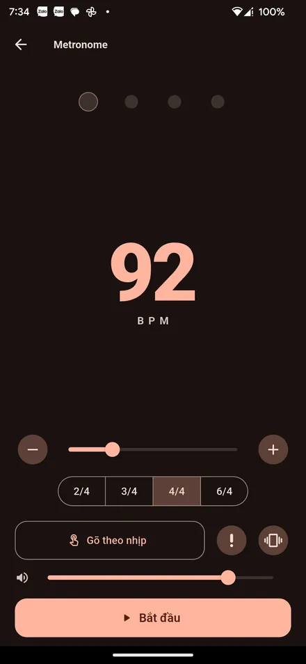
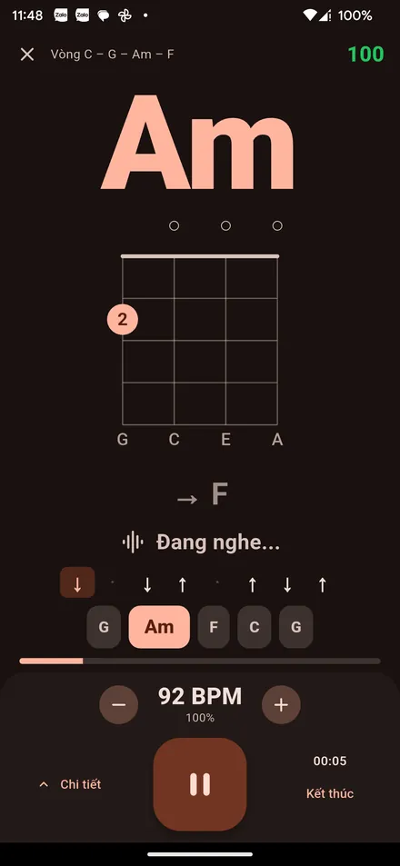

Miễn phí · Không tài khoản · Chạy offline Free · No account · Works offline
Học · Chơi · Lắng nghe · Tiến bộ Learn · Play · Listen · Improve
Ứng dụng học ukulele bằng tiếng Việt. Có lộ trình cho người chưa từng cầm đàn, 28 hợp âm kèm hướng dẫn bấm từng ngón, máy lên dây bằng microphone, metronome và 9 bài để tập.
A ukulele app written in Vietnamese. A path for people who have never held one, 28 chords with finger-by-finger guidance, a microphone tuner, a metronome and nine songs to play.
Phiên bản 1.0.0 · Android 6.0 trở lên · Hầu hết máy từ 2017 chọn bản arm64 Version 1.0.0 · Android 6.0+ · Almost every phone since 2017 wants the arm64 build

UkeFlow chưa có trên CH Play, nên bạn tải thẳng file cài đặt về máy. Android sẽ hỏi một lần cho phép — đó là chuyện bình thường khi cài ngoài chợ ứng dụng.
UkeFlow is not on Play Store yet, so you install the file directly. Android asks for permission once; that is normal for anything installed outside a store.
Bấm nút Tải APK ở trên, ngay trên chính điện thoại bạn muốn cài.
Press Download APK above, on the phone you want it on.
Android hỏi “cho phép cài từ nguồn này?” — bật lên, rồi bấm Cài đặt. Chỉ hỏi lần đầu.
Android asks whether to allow installs from this source. Turn it on, then press Install. It only asks once.
Mở app, làm bước đầu tiên của lộ trình: lên dây. Đàn sai dây thì bấm đúng vẫn nghe sai.
Open the app and take the first step: tuning. Correct fingers on an out-of-tune instrument still sound wrong.
Ảnh chụp từ máy Android thật, không phải bản vẽ.
Screenshots from a real Android phone, not mockups.
Ba chặng, 15 bước, từ “cầm được cây đàn” tới “chơi được cả bài”. Bước nào đo được thì tự đánh dấu khi bạn tập thật — không phải ô tích bấm cho vui.
Three stages, fifteen steps, from getting a sound out to playing a whole song. Steps that can be measured tick themselves from real practice — not a checklist you tap through.

28 hợp âm, mỗi hợp âm chỉ rõ ngón nào đặt vào dây nào, ngăn mấy — kèm mẹo bấm và cái lỗi người mới sắp mắc.
Twenty-eight chords, each one naming which finger goes on which string at which fret — plus a tip and the mistake you are about to make.

Gảy từng dây, app nghe và cho biết đang cao hay thấp bao nhiêu. Âm thanh xử lý ngay trên máy, không gửi đi đâu cả.
Pluck a string and the app tells you how far sharp or flat it is. The audio is processed on the phone and goes nowhere.
Tất cả chạy offline. Không tài khoản, không quảng cáo, không mua thêm gì.
All of it works offline. No account, no ads, nothing to buy.

Hợp âm xếp theo vòng quãng năm, màu cho biết bạn thạo tới đâu. Hợp âm gần nhau thì hay đi với nhau.
Chords laid out on the circle of fifths, coloured by how well you know them. Neighbours tend to belong together.

Không thanh công cụ, không nút bấm che mất chữ. Vuốt để đổi bài, kéo lên để chỉnh tốc độ.
No toolbars, no buttons over the words. Swipe to change song, drag up to change tempo.

Chọn cặp hợp âm, đặt nhịp, đổi đúng vào phách đầu. App nhớ cặp nào bạn hay vấp và gợi lại.
Pick a pair, set a tempo, change on the downbeat. The app remembers which pairs trip you up and brings them back.

Năm mẫu, mỗi mẫu bấm nghe thử được chứ không chỉ nhìn mũi tên lên xuống rồi đoán.
Five patterns, each one playable — not just arrows to stare at and guess from.

40–200 BPM, gõ theo nhịp để dò tốc độ, nhấn mạnh phách đầu. Nhịp bám theo đồng hồ âm thanh nên không trôi.
40–200 BPM, tap along to find a tempo, accent on the first beat. It rides the audio clock, so it does not drift.

Hợp âm to gần nửa màn hình, đọc được từ khoảng cách ôm đàn. Chỉnh tốc độ ngay giữa lúc đang chơi.
The chord fills half the screen, readable from playing distance. Change the tempo mid-song.
Chấm điểm còn đang mô phỏng Scoring still simulatedKể cả những câu mà câu trả lời không có lợi cho app.
Including the ones the answer does not flatter.
Vì file tải thẳng từ đây chứ không qua CH Play. Android hỏi bạn có tin nguồn này không — bật cho phép một lần rồi cài bình thường. Cảnh báo đó nói về nơi tải, không nói app có gì xấu.
Because the file comes from here rather than from Play Store. Android asks whether you trust the source; allow it once and install as normal. The warning is about where it came from, not about what is inside.
Không. UkeFlow không có một dòng mã mạng nào — mọi bài hát, hợp âm và dữ liệu tập đều nằm trong máy. Bật máy bay vẫn dùng được hết.
No. UkeFlow contains no networking code at all — every song, chord and practice record lives on the phone. It works fine in airplane mode.
Microphone chỉ bật khi bạn tự mở phần lên dây và bấm nút bật. Tín hiệu được xử lý ngay trong máy để tính cao độ rồi bỏ đi — không ghi ra file, không gửi đi đâu, mà app cũng không có khả năng gửi.
The microphone only turns on when you open the tuner and press the button. The signal is turned into a pitch on the phone and discarded — nothing is recorded to a file, nothing is sent, and the app has no way to send anything.
Nói thẳng: phần nhận diện hợp âm qua microphone vẫn đang mô phỏng. Nghĩa là điểm số và độ chính xác trong màn tập theo bài chưa phải nghe từ tiếng đàn thật của bạn. Máy lên dây thì nghe thật — đó là hai chuyện khác nhau. Phần nhận diện hợp âm là việc đang làm tiếp.
Straight answer: chord recognition through the microphone is still simulated. The scores and accuracy in the play-along screen do not yet come from the sound you make. The tuner does listen for real — the two are different things. Chord recognition is what is being built next.
Vẫn xem được thư viện hợp âm, lộ trình và các bài. Nhưng thành thật thì học đàn phải có đàn — một cây soprano rẻ nhất cũng đủ để đi hết lộ trình này.
You can still read the chord library, the path and the songs. But honestly, learning an instrument needs the instrument — the cheapest soprano is enough for everything here.
Cần Android 6.0 trở lên. Gần như mọi máy từ 2017 dùng bản arm64; nếu máy rất cũ và báo lỗi không cài được, thử bản armeabi-v7a.
Android 6.0 or newer. Almost every phone since 2017 takes the arm64 build; if yours is much older and refuses, try the armeabi-v7a one.
Chỉ dân ca và tác phẩm thuộc phạm vi công cộng — Lý Cây Bông, Trống Cơm, Bắc Kim Thang, Kìa Con Bướm Vàng, Twinkle Twinkle, Silent Night, Amazing Grace, Auld Lang Syne — cộng một bài luyện vòng hợp âm tự soạn. Không chép hợp âm hay lời từ các trang nhạc khác. Lời dân ca có dị bản theo vùng, đây là một cách chép phổ biến.
Folk and public-domain material only — a handful of Vietnamese folk songs plus Twinkle Twinkle, Silent Night, Amazing Grace and Auld Lang Syne — with one original chord-loop exercise. Nothing is copied from chord sites. Folk lyrics vary by region; these are one common transcription.
Hiện tại: quay lại trang này tải bản mới rồi cài đè, dữ liệu tập giữ nguyên. Thông báo cập nhật ngay trong app là việc đang làm.
For now: come back here, download the newer file and install over the top; your practice history stays. In-app update notices are on the way.
Ngắn, vì thật sự chẳng có gì nhiều để nói.
Short, because there genuinely is not much to say.
UkeFlow miễn phí — tải về, dùng, đưa cho bạn bè thoải mái. Mã nguồn hiện chưa công khai. App được dựng trên các thư viện mã nguồn mở dưới đây, mỗi thư viện giữ giấy phép riêng của nó.
UkeFlow is free — download it, use it, pass it on. The source code is not public at the moment. The app is built on the open-source libraries below, each under its own licence.
| Thư viện | Library | Giấy phép | Licence | Dùng để làm gì | Used for |
|---|---|---|---|---|---|
| Flutter | BSD-3-Clause | Nền tảng dựng appThe framework itself | |||
| flutter_riverpod 2.6.1 | MIT | Quản lý trạng tháiState management | |||
| go_router 14.8.1 | BSD-3-Clause | Điều hướng màn hìnhNavigation | |||
| drift 2.31.0 | MIT | Lưu lịch sử tập vào SQLitePractice history in SQLite | |||
| sqlite3_flutter_libs 0.5.42 | MIT | Bản SQLite đi kèm appThe bundled SQLite build | |||
| just_audio 0.9.46 | MIT | Phát tiếng metronome và quạt chảMetronome and strum playback | |||
| record 6.2.1 | BSD-3-Clause | Đọc microphone cho máy lên dâyMicrophone input for the tuner | |||
| shared_preferences 2.5.3 | BSD-3-Clause | Lưu cài đặtSettings storage | |||
| path_provider 2.1.5 | BSD-3-Clause | Tìm thư mục dữ liệu trên máyFinding on-device folders | |||
| intl 0.20.2 | BSD-3-Clause | Định dạng ngày giờ, sốDate and number formatting | |||
| cupertino_icons 1.0.8 | MIT | Bộ biểu tượngIcon set |
Gặp lỗi, thấy lời bài hát chép sai, hay muốn thêm bài — cứ viết thư. Báo lỗi thì cho biết tên máy và bản Android sẽ nhanh hơn nhiều.
Found a bug, spotted wrong lyrics, or want a song added — just write. For bug reports, the phone model and Android version speed things up a lot.